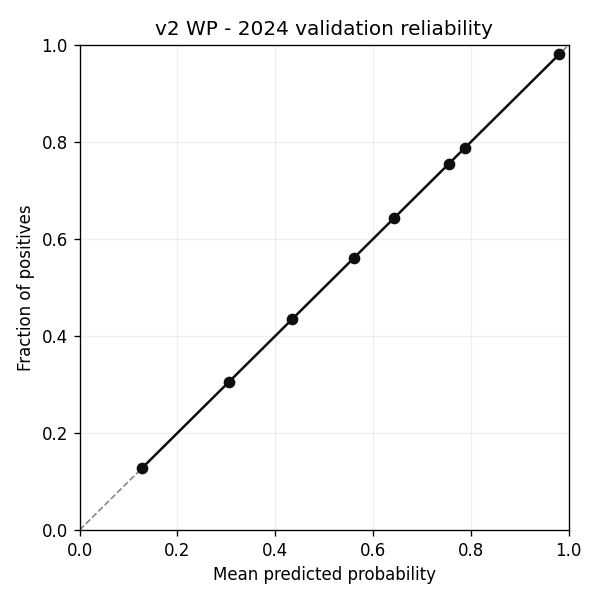
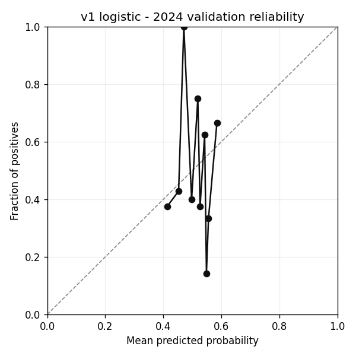

Isolated ML engine under ml/. Through Phase 2.
Per-delivery prediction: at each ball, predict whether the batting team eventually wins. 16,707 deliveries in 2025 test set.
| Baseline / model | 2025 pre-match accuracy |
|---|---|
| Coin flip | 50.0% |
| Always team 2 | 52.9% |
| Heuristic (cricsheet inputs) | 54.3% |
| v1 logistic (killed) | 41.4% |
| v2 WP (per-delivery, not pre-match) | 71.6% |
| Academic baseline (pre-match) | 67–72% |

Each chart shows team1's win probability across the match. WP is smoothed over a 6-ball window. All matches shown were decided by 1–2 runs/wickets.
One calibrated LightGBM per stage of the match. Same train/val/test split.
| Stage | Features | Val 2024 | Test 2025 | Brier (test) |
|---|---|---|---|---|
| pre_match | 14 | 57.7% | 47.1% | 0.266 |
| post_toss | 11 | 56.3% | 41.4% | 0.269 |
| post_pp1 | 13 | 64.8% | 67.1% | 0.208 |
| innings_break | 16 | 71.8% | 64.3% | 0.205 |
Pre-match val 57.7% improves over v1 by +11.2% and over the heuristic val by +1.4%, but the +2024-to-2025 distribution shift hurts the test slice (n=70 is small).
The post-PP1 and innings-break models cross into the academic target band, which is what we'd expect — the more match state we observe, the more separable the outcome.
predict.py now routes to the appropriate stage model.
2024 val: 46.5% · 2025 test: 41.4% · Brier: 0.261
Falls below kill criterion. Predicted probabilities cluster at 0.5 (std ≈ 0.035). Not integrated. See ml/PROGRESS.md post-mortem.

| Season | Heuristic acc | n |
|---|---|---|
| 2014 | 66.1% | 59 |
| 2022 | 60.8% | 74 |
| 2008 | 60.3% | 58 |
| 2024 (val) | 56.3% | 71 |
| 2025 (test) | 54.3% | 70 |
| 2023 | 41.1% | 73 |
See ml/docs/model_history.md.
Last updated: 2026-05-12 (Phase 2).